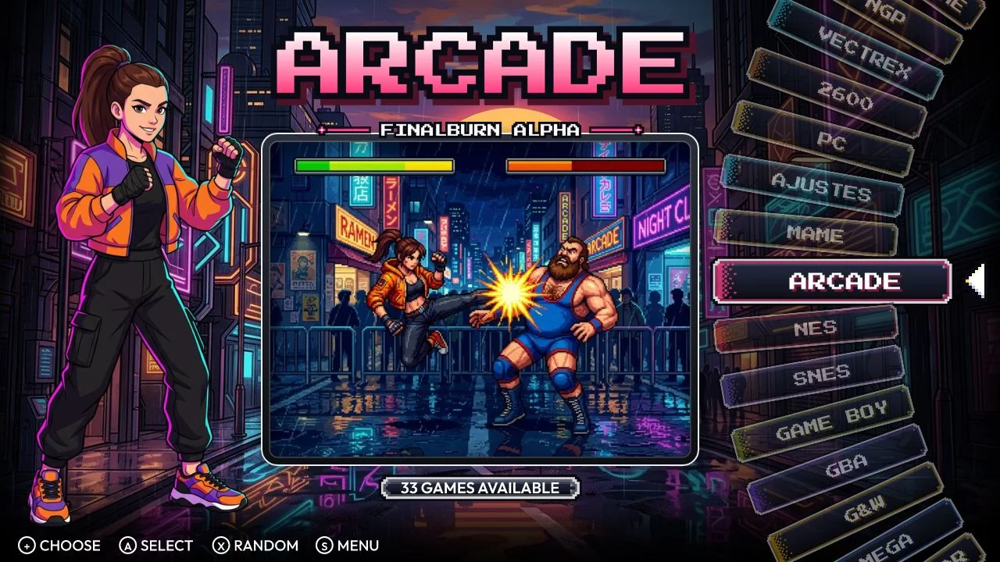
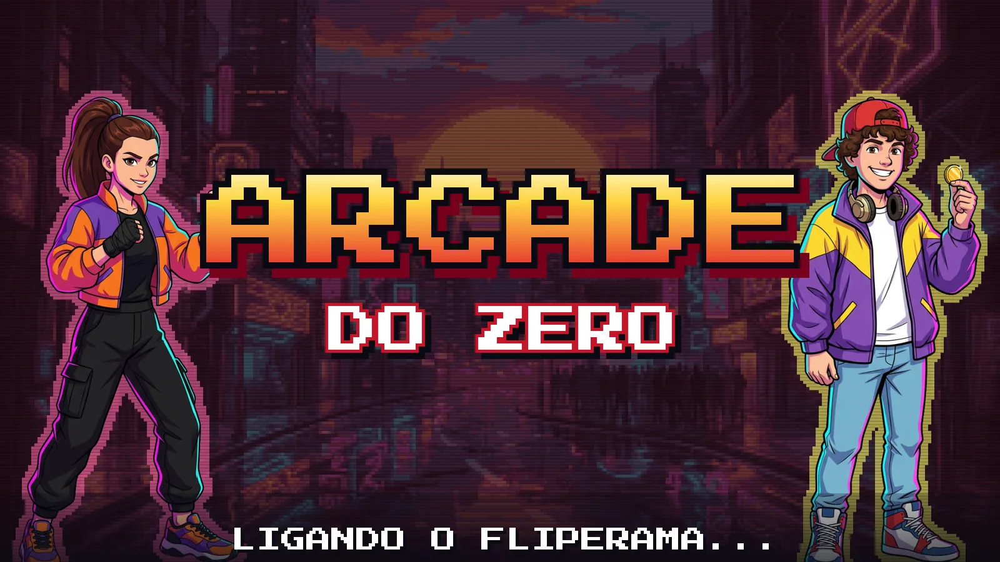
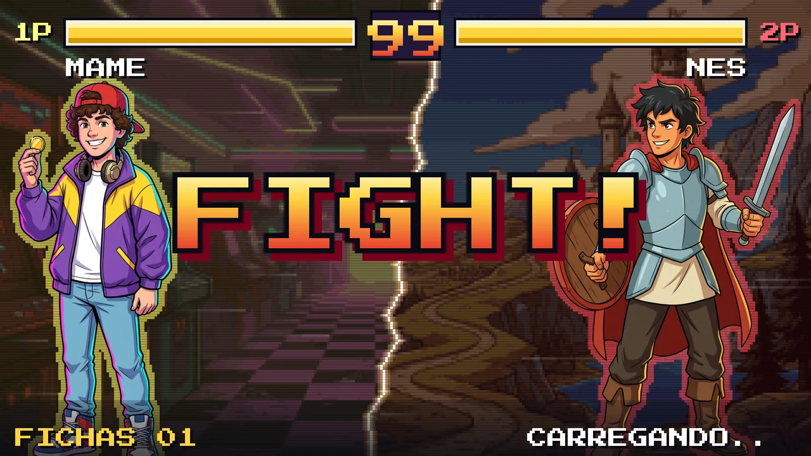

Do cartão vazio ao fliperama jogando. Num app só.
Ele cria o RetroPie no cartão, coloca seus jogos pelo Wi-Fi com capa e deixa tudo com cara de fliperama. Sem digitar comando, sem abrir a máquina.
Windows 10 e 11 (64-bit) · instalador .exe · todas as versões


01 · CRIAR
Ele grava o RetroPie pra você
Nada de baixar imagem, achar programa de gravar cartão ou mexer no Linux. A aba Novo fliperama anda com você um passo de cada vez e só deixa seguir quando o passo está certo.
- 01
Escolha a sua Raspberry Pi
Pi 3 ou Pi 4. O app pega a versão certa do RetroPie para ela.
- 02
Coloque o cartão no computador
Ele mostra só os cartões removíveis, com nome e tamanho, para você não apagar o disco errado.
- 03
Confirme o Wi-Fi da casa
A rede do seu computador já vem preenchida. O fliperama nasce conectado.
- 04
Ele baixa, confere e grava
Baixa o RetroPie, confere se o download veio inteiro e grava o cartão, com a barra de progresso na tela.
- 05
Ligue a Pi
O app encontra o fliperama na rede sozinho e deixa tudo pronto: nome, fuso horário, conexão salva.
Gravando o RetroPie no cartão
Não tire o cartão até terminar. O Wi-Fi da casa já está dentro.
Gravar apaga o cartão inteiro. Use um cartão só para o fliperama. Antes de apagar, o app confere de novo se é removível e se o tamanho bate.
02 · JOGOS
Seus jogos no fliperama, pelo Wi-Fi
Do computador para a tela do fliperama em segundos. Sem pendrive, sem tirar o cartão, sem saber em qual pasta cada jogo mora.

Diga de qual videogame é. O resto é com ele.
Escolha o arquivo no computador, marque o videogame e mande. O jogo vai para o lugar certo e aparece na lista do fliperama na hora.
- 34 videogames: Nintendo, Super Nintendo, Mega Drive, PlayStation, Dreamcast, Neo Geo, arcade e mais
- Capa automática: ele procura a capa do jogo e já põe no menu
- Discos prontos: jogo de PlayStation ou Dreamcast em .zip ou .7z é aberto e arrumado sozinho

Achou um jogo? Ele cai direto no fliperama
O app tem um navegador por dentro. O que você baixar por ele já sai do computador direto para o fliperama, no videogame certo, sem você copiar nada.
- Modo automático: baixou, mandou, capa posta
- Não cabe? Ele confere o espaço do cartão antes e avisa
- Biblioteca com todos os jogos do fliperama, tamanho de cada um e apagar com um clique
O app não vem com jogos. Você coloca os jogos que já tem, os seus backups, e os muitos jogos livres e homebrew feitos por fãs para esses videogames. Jogo comercial só com o original na mão: o app é a ferramenta, a escolha do que colocar é sua.
03 · JOGAR
Liga e já parece fliperama de verdade
O RetroPie puro é cinza e cheio de menu. O app instala o tema do Arcade do Zero: abertura, menu e tela de carregamento desenhados em pixel, com cara de fliperama de bar.


O tema do fliperama vem junto
Um clique e a tela muda: abertura animada, menu com a roda de videogames e o personagem de cada um, tela de carregamento com o nome do console.
- Tema próprio, desenhado para o Arcade do Zero
- Funciona com o controle do fliperama: manche e botões, sem teclado
- Quer voltar ao visual antigo? É só trocar na aba Temas

Centenas de outros visuais
Prefere outro estilo? A aba Temas mostra os temas da comunidade com foto, e só os que funcionam no seu fliperama.
- Filtre por cor ou criador, esconda os que não gostou
- Espaço no cartão e reiniciar o fliperama pelo computador
- Acha o fliperama sozinho no Wi-Fi de casa, sem número de rede
O QUE VOCÊ PRECISA
Quatro coisas, e duas você já tem
Um PC com Windows
Windows 10 ou 11, 64-bit. É onde o app roda.
Uma Raspberry Pi
Pi 3 ou Pi 4. Já tem RetroPie? Serve também: o app encontra.
Um cartão microSD
16 GB ou mais. Para jogos de PlayStation, 32 GB.
Wi-Fi em casa
O mesmo Wi-Fi para o PC e o fliperama.
CONFIANÇA
Grátis, aberto e sem rastreio
- Código abertoTodo o funcionamento está no GitHub, em desktop-app/src. Nada escondido.
- Gere o seu próprio .exeEm 3 comandos você compila o app e obtém o mesmo programa.
- Sem conta, sem telemetriaFala só com a sua Raspberry Pi, com os sites que você abrir e com o GitHub.
- Seus dados ficam no seu PCEndereço e senha da Pi ficam num arquivo local. Nada sobe para servidor.
"O Windows protegeu o seu PC". App grátis sem certificado pago recebe esse aviso azul ao abrir. Não é vírus: clique em Mais informações e em Executar assim mesmo.
PERGUNTAS
Antes de baixar
É grátis mesmo?
Sim. Sem período de teste, sem anúncio, sem conta. O código está aberto no GitHub.
Preciso saber Linux ou programação?
Não. Tudo é clicando: o app grava o cartão, acha o fliperama na rede e manda os jogos. Você nunca abre um terminal.
O app vem com jogos?
Não. Você coloca os jogos que já tem e jogos livres ou homebrew. Jogos comerciais só se você tiver o original: o app só transporta o arquivo que você escolher.
Já tenho um fliperama com RetroPie. Serve?
Serve. Pule a parte de criar: o app procura o fliperama no Wi-Fi e você já pode mandar jogos e trocar o tema.
Funciona no Mac ou no Linux?
Por enquanto só no Windows. Quem sabe compilar pode gerar no Mac ou no Linux a partir do código aberto, mas não é testado.
Gravar o cartão apaga o quê?
Só o cartão que você escolher, e ele inteiro. O app lista apenas cartões removíveis e confere tamanho e nome de novo antes de apagar.
Seu fliperama começa por aqui
Baixe o app, coloque o cartão e siga os passos. O resto ele faz.